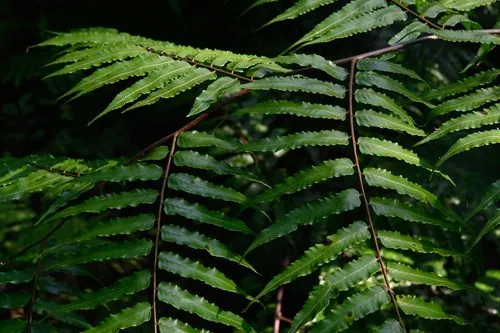

蕨类与裸子植物 · 植物界
黑桫椤 Gymnosphaera podophylla

桫椤科黑桫椤属中型树蕨，叶柄与叶轴乌黑发亮，叶片二回羽状，生于林下溪边，是国家二级保护植物。
- 分类
- 门蕨类植物门纲木贼纲目桫椤目科桫椤科属黑桫椤属
- 栖息环境
- 海拔 300–1000 米的山谷溪边与林下阴湿处，喜温暖湿润、散射光
- 地理分布
- 中国华南、西南及日本、越南等地
- 保护级别
- 中国国家二级保护野生植物；森林砍伐使野生种群下降
物种志
黑桫椤为中型树形蕨类，主干直立或斜生，高 1–3 米，表面具老叶柄留下的疤痕。叶簇生主干顶端，二回羽状至三回羽状，长 1–2 米，叶柄、叶轴乌黑发亮，基部被深色披针形鳞片，幼叶拳卷。孢子囊群圆形，生于小脉分叉处，成熟时褐色。
本种分布于中国华南、西南及日本、越南等地，生于海拔 300–1000 米的山谷溪边与林下阴湿处，喜温暖湿润、散射光充足的环境。它主干较细、叶柄乌黑，是桫椤科中形态较为轻盈的种类。黑桫椤对生境要求较高，天然更新缓慢，野生种群因森林砍伐与采挖而下降，桫椤科所有种均被列为国家二级保护野生植物。栽培需高湿、半阴与酸性土壤。
形态与习性
- 株高主干高 1–3 米，较细
- 叶二回至三回羽状，长 1–2 米
- 叶柄乌黑发亮，基部被深色鳞片
- 光照喜散射光，忌强光直射
- 水分喜高湿，溪边生长良好
- 土壤疏松肥沃的酸性壤土
- 主要用途园林观赏、蕨类研究与种质保护
趣味知识
- 黑桫椤的叶柄和叶轴乌黑发亮，是它得名的原因。
- 它的主干比大叶黑桫椤细，整体姿态更轻盈。
- 黑桫椤的幼叶拳卷如蜗牛壳，展开后像一把巨大的羽毛伞。
- 桫椤科植物靠孢子繁殖，从孢子到成株往往需要很多年。